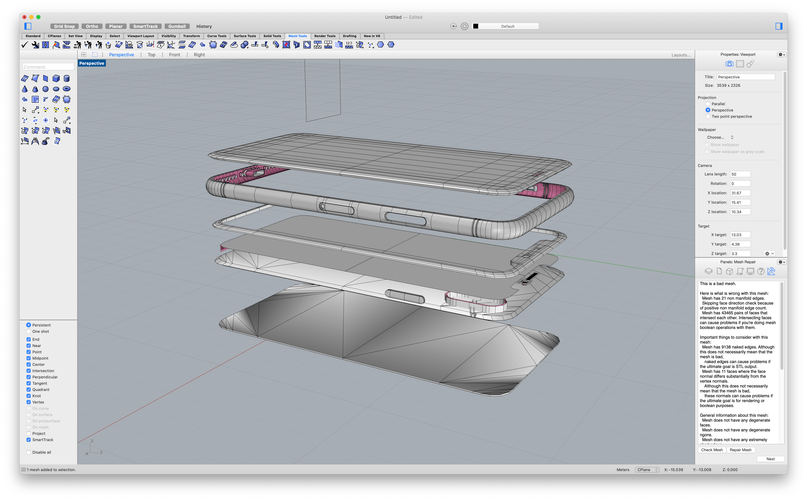
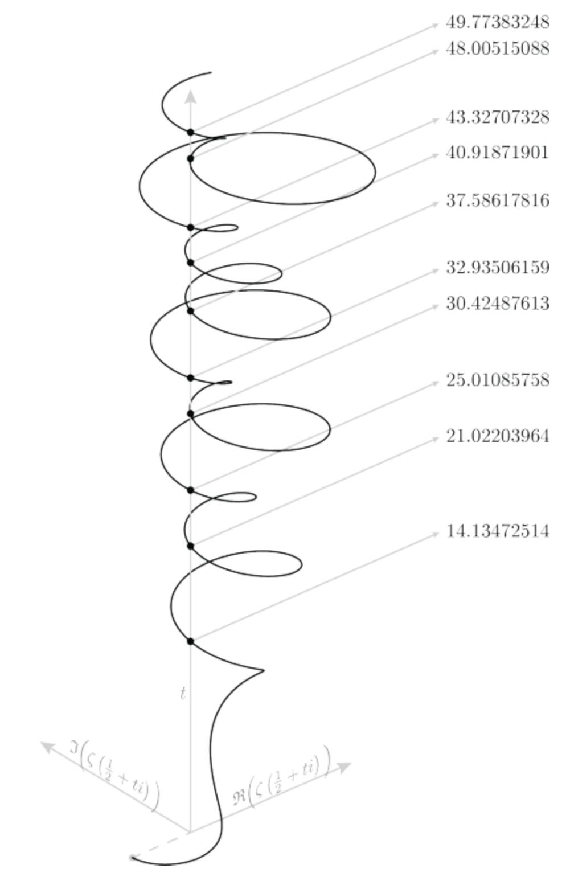

WEEK 5
Getting started with Grasshopper!

In this assignment, I created a single printable model by merging two meshes together and started working on my lamp design for next week's assignment. You can get my .3dm files here.
Task 1: Meshing Things
Initial Idea
My initial plan for this assignment is to create a model that visualizes the technologies a smartphone has replaced of the past decade. You can imagine this being an iPhone at the front of a model and right behind it is an explosion of different devices like books, old phones, clocks, cameras, television, etc. morphed into a single gigantic structure.
I started tackling this idea by finding all the available 3D models that I wanted. I jumped into Rhino to work on the most important model — the iPhone
To my dismay, the iPhone, like many of the other 3D models, was composed of numerous meshes and many of them did not line up with one another, making it a huge pain to work with.
After a full day of working on this, I decided to scrap the idea in the interest of time, and try something much simpler instead.
Pivoting To A Different Idea
The other idea that I came up with was to create a cute little figure of a cat-dog. I was able to find the low-poly aesthetic models that I was looking for and imported them into Rhino.
Upon scaling and rotating them into the right position, I created a plane for each model and used MeshBooleanSplit to split the models.
The dog shape did not split very well so I had to clean up some vector points and use FillMeshHole to cover any open ends. I then put them adjacent to each other and attempted to match the two closed meshes together.
This took a little while because it was very hard to select the right points on the meshes and move them without accidentally opening the mesh.
After matching the two shapes together, I then joined them together and exported it as a single .stl file with no errors/warnings.
To ensure that the model did not have any outstanding errors for printing, I imported the model into Cura as an inspection and the software was able to slice the model with no miscalculations.
The resulting print, as you can see, was also quite successful.
Upon a close inspection though, you can see distortions between where the cat and dog is merged.
Task 2: Lamp Design
For this part of the assignment, I really wanted to create a lamp that is based on something mathematical. So I focused my time this week on researching different theorems and how others have attempted to visualize them.
After looking at a lot of math tutorials and illustrations (while trying to rejog my scrappy Math-mory), I came up with several ideas for my lamp shade.
Idea 1: Prime Numbers
I stumbled upon a that visualized prime numbers using a polar plot and the result was absolutely beautiful. There was also an interesting trend where the plot will turn from a spiral pattern to a ray pattern as the prime numbers get larger (as shown in the images below). I think it would be amazing to see if I can turn the "random" nature of this prime polar plot into a lamp shade.

Idea 2: Riemann Zeta Function
Riemann's Zeta Function can create beautiful plots when you input complex numbers. Here's an introductory video about it if you're interested.
It would be very cool if I am able to extend the Zeta function into some form 3D object, like this post and this parametric plot I found online.
Idea 3: Fermat's Last Theorem
I much more simplistic idea I had was simply creating shapes based on the equation in Fermat's Last Theorem. By increasing the powers in even numbers I can create a lamp made of layers that morph from a circular cone to a pyramid. A simulation of the equations is shown below: